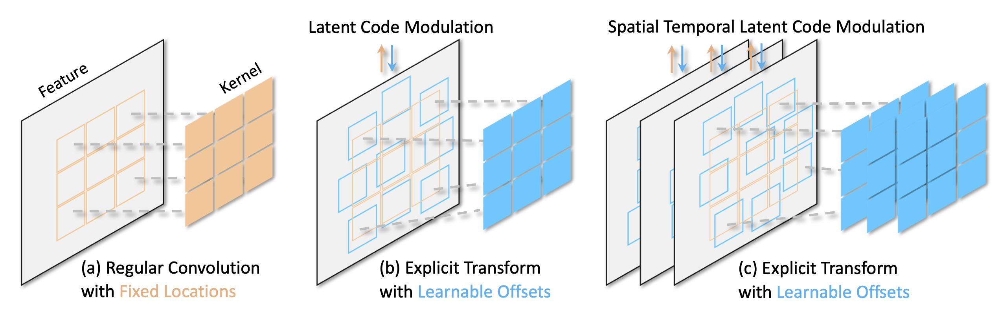
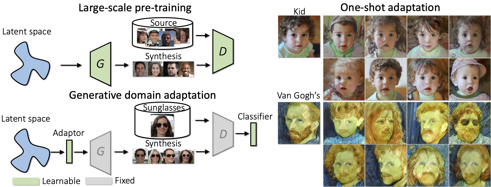

|
Ceyuan Yang E-mail / Google Scholar / Twitter / Github |

|
Biography
Ceyuan Yang is currently a research scientist at ByteDance. His research interests cover representation learning and content generation, especially for image, video and 3D synthesis.Prior to that, he was a researcher at Shanghai Artificial Intelligence Laboratory, and fortunately worked with Dr. Bo Dai. He obtained his PhD degree at Multimedia lab (MMLAB), Department of Information Engineering in the Chinese University of Hong Kong, advised by Prof. Bolei Zhou. Before that, He received the B. Eng degree from Honors College in Northwestern Polytechnical University in 2018.
News
- [04/2024] Looking for self-motivated interns and full-time researchers. Please email me if interested.
Recent Publications [Full list]
equal contribution +corresponding author|
BerfScene: Bev-conditioned Equivariant Radiance Fields for Infinite 3D Scene Generation,
|
|
|
SceneWiz3D: Towards Text-guided 3D Scene Composition,
|
|


|
AnimateDiff: Animate Your Personalized Text-to-Image Diffusion Models without Specific Tuning,
|
|  |
Learning Modulated Transformation in GANs,
|

|
Revisiting the Evaluation of Image Synthesis with GANs,
|
|  |
One-Shot Generative Domain Adaptation,
|

|
LinkGAN: Linking GAN Latents to Pixels for Controllable Image Synthesis,
|
Professional activities
- Conference Reviewer for CVPR, ICCV, ECCV, ICLR, ICML, NeurIPS, AAAI, WACV.
- Journal Reviewer for TPAMI, TOG, TIP, PR.